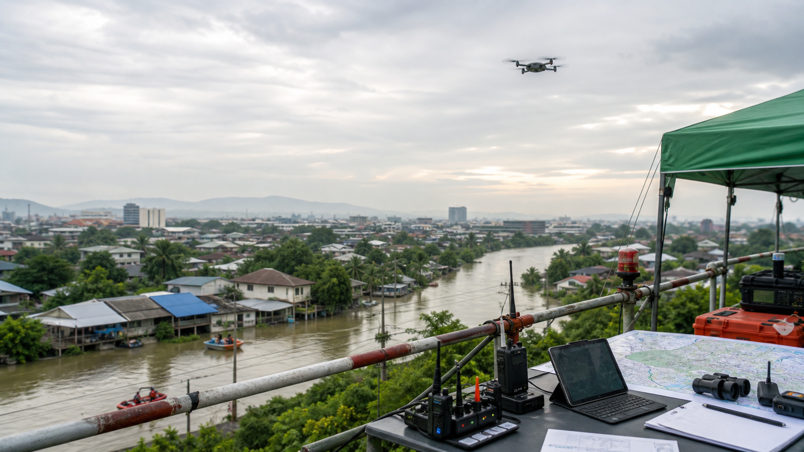

Flood Rescue Drone
ค้นหาเร็วขึ้นด้วย
รวมข้อมูลจากประชาชน ภาพอ้างอิง และพิกัดจากทีมโดรนไว้ใน flow เดียว เพื่อให้เจ้าหน้าที่ตรวจสอบและอัปเดตสถานะได้เร็วขึ้น
Human review
เจ้าหน้าที่ยืนยันก่อนเปลี่ยนสถานะ
ห้องควบคุมโดรน
แยกเว็บสำหรับทีมปฏิบัติการ
PDPA aware
ใช้ข้อมูลเท่าที่จำเป็นต่อภารกิจ
ก่อนเริ่มใช้งาน
เลือกทางที่ตรงกับสถานการณ์ตอนนี้
ถ้าต้องการเช็กสถานะ ให้ค้นจากชื่อ รหัสเคส หรือพื้นที่พบล่าสุด ถ้าต้องแจ้งข้อมูลใหม่ ให้กรอกข้อมูลเท่าที่ทราบและแนบรูปอ้างอิงที่ชัดที่สุด
ตรวจสอบสถานะ
ค้นหาเคสที่กำลังค้นหา รอยืนยัน หรือพบแล้ว พร้อมพิกัดล่าสุดเมื่อมีการยืนยันจากทีมภาคสนาม
แจ้งข้อมูลผู้สูญหาย
ส่งชื่อ จุดที่พบล่าสุด ข้อมูลติดต่อ และรูปใบหน้าอ้างอิงเข้าสู่คิวช่วยเหลือ
Rescue workflow
ข้อมูลเดียวกัน แยกหน้าตามบทบาท
ประชาชนใช้หน้าเช็กและแจ้งข้อมูล ส่วนทีมโดรนใช้เว็บปฏิบัติการที่มี passcode และควรล็อกด้วย Cloudflare Access ตอนขึ้น production